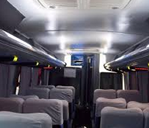

Modalidades
Conheça as diversas modalidades de viajar com Vai de Bus!
Convencional
Possui paradas ao logo da viagem para embarque e desembarque de passageiros.
Semi-direito
O embarque e o desembarque são feitos em mais de uma localidade.

Possui paradas ao logo da viagem para embarque e desembarque de passageiros.
O embarque e o desembarque são feitos em mais de uma localidade.